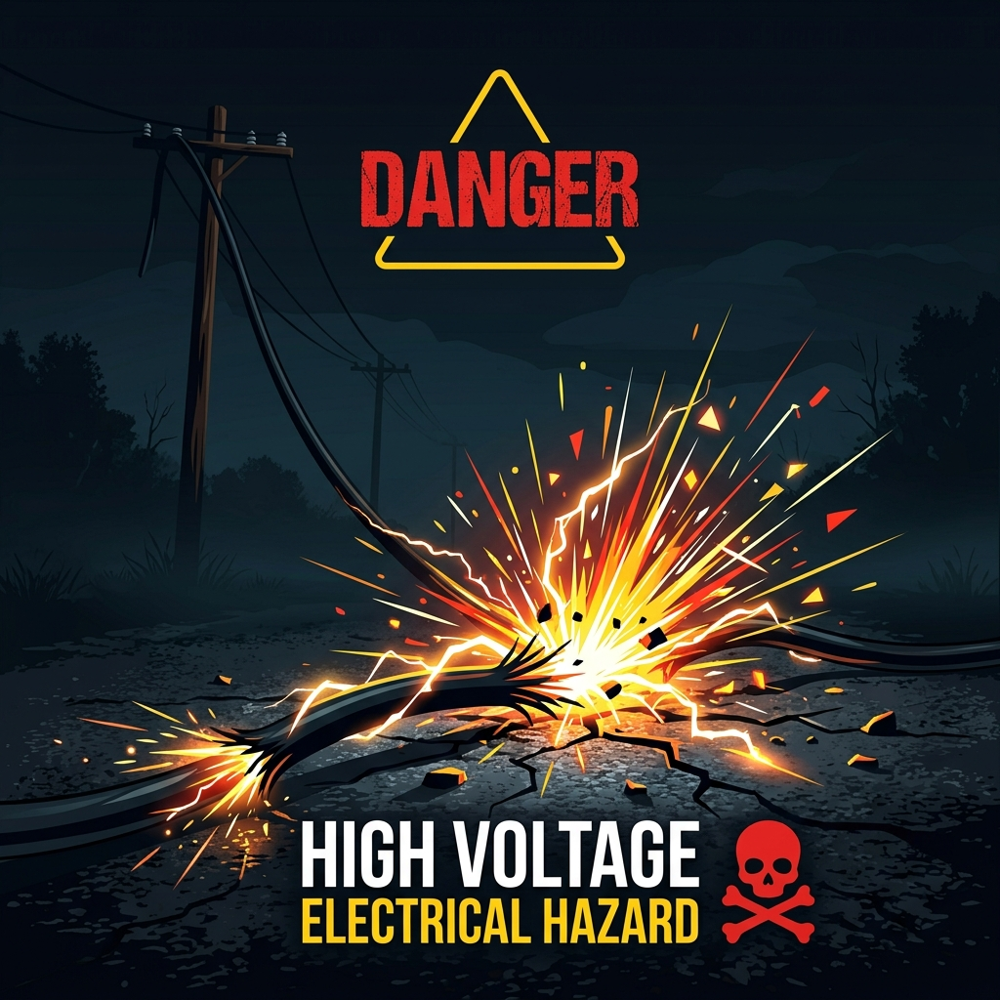
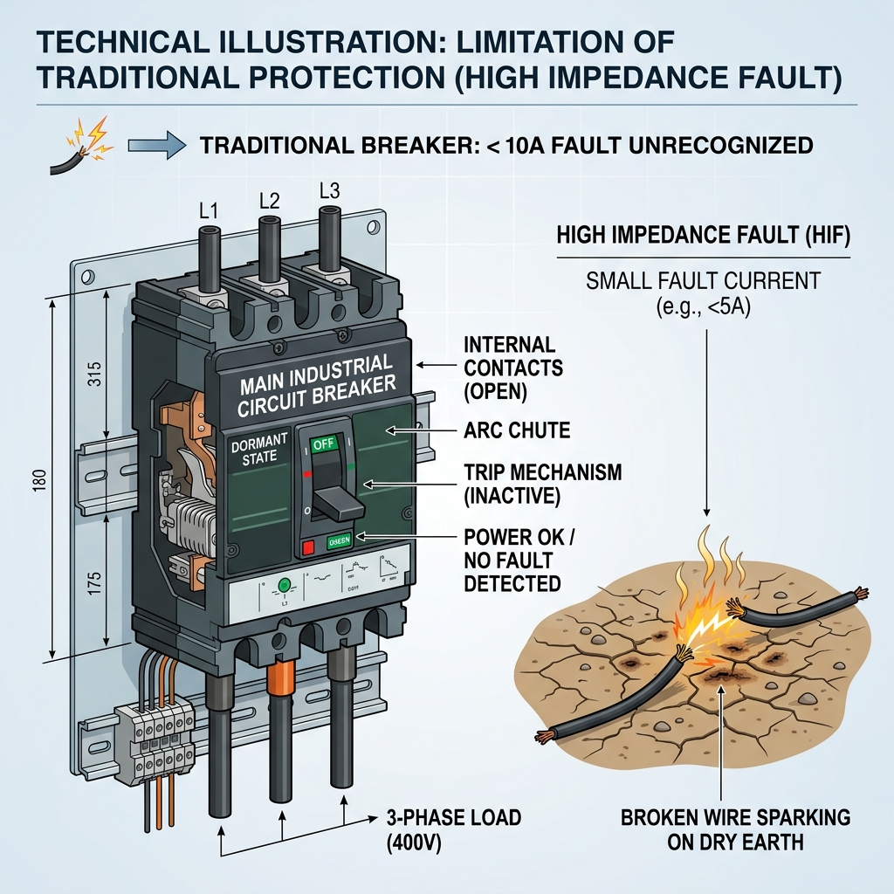
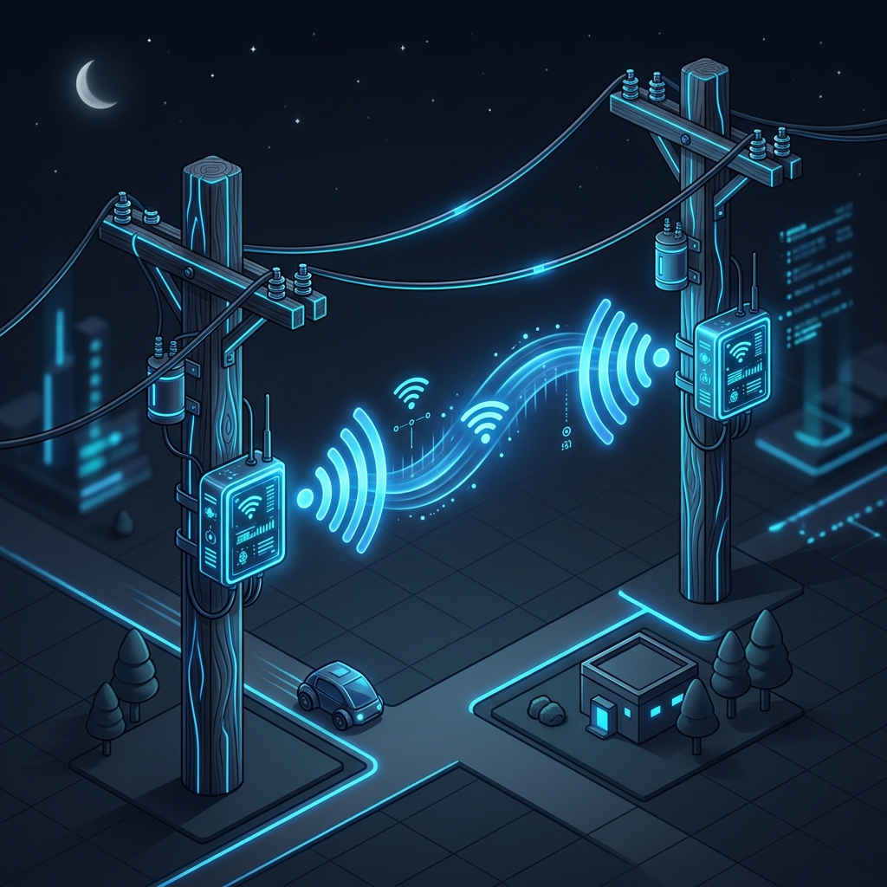
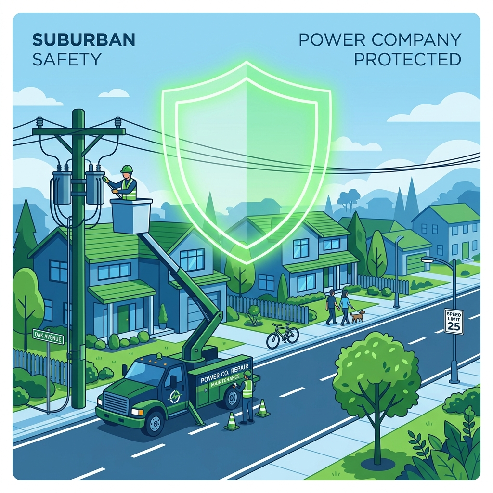

Every year, around 6,500 people die globally from downed power lines.
When an LT line snaps, it remains a live, invisible hazard to pedestrians.

Traditional breakers only detect massive short circuits. A wire falling on dry earth creates a High Impedance Fault with tiny leakage current—leaving the downed wire fully electrified.

We turn every street pole into a smart node using IoT. Pole A talks to Pole B via Wi-Fi.
If Pole A has power but Pole B suddenly reads 0 Amps, the physical wire has snapped.
Within milliseconds, Line_IQ triggers a local relay to kill the power.
Simultaneously, our dashboard alerts the control center with the exact fault location.

Current high-tech fault detectors cost over $10,000. Line_IQ costs under $15 per pole.
It is hyper-localized, 100% accurate, and proactively saves lives.